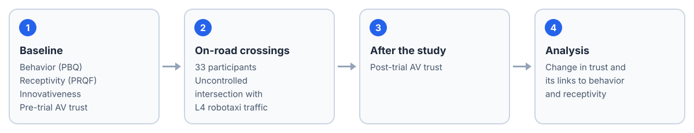

Summary
Most evidence about pedestrian trust in autonomous vehicles comes from labs and simulators. This study examines how pedestrians' trust in AVs, their receptivity, and their crossing behavior relate to one another when they encounter Level-4 robotaxis in a naturalistic, real-world setting.
In a commercial robotaxi operating zone, 33 participants repeatedly crossed an uncontrolled intersection with frequent robotaxi traffic. Before and after the crossings they completed the Pedestrian Behavior Questionnaire, the Pedestrian Receptivity Questionnaire for Fully AVs, an AV trust scale, and the Personal Innovativeness Scale.
Trust in AVs increased significantly after the experiment. The increase was associated with the interaction dimension of pedestrian receptivity, and the positive and error subscales of pedestrian behavior shaped how trust changed.
Study Design

Study design.
The study took place on public roads inside a commercial robotaxi operating zone, at an uncontrolled intersection with frequent robotaxi traffic. Each participant crossed the intersection repeatedly, encountering fully driverless Level-4 vehicles in ordinary traffic rather than a staged scenario.
We measured pedestrian behavior (Pedestrian Behavior Questionnaire), receptivity to fully automated vehicles (Pedestrian Receptivity Questionnaire for Fully AVs), personal innovativeness (Personal Innovativeness Scale), and trust in AVs before and after the crossings.
Results
- Trust grew with exposure. Trust in AVs was significantly higher after the repeated crossings than before.
- Receptivity mattered. The increase was associated with the interaction dimension of pedestrian receptivity toward fully automated vehicles.
- So did everyday behavior. The positive and error subscales of the Pedestrian Behavior Questionnaire influenced how trust changed.
BibTeX
@article{chang2025formation,
author = {Chang, Xiang and Yi, Zhijie and Liu, Yichang and Sheng, Hongling and He, Dengbo},
title = {The Formation of Trust in Autonomous Vehicles after Interacting with Robotaxis on Public Roads},
journal = {Proceedings of the Human Factors and Ergonomics Society Annual Meeting},
note = {HFES ASPIRE 2025},
year = {2025},
doi = {10.1177/10711813251358236}
}